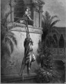

|
|
|
1 Samuel 19
|
Saul Tries to Kill David Again
|
| 19:1
And Saul spake to Jonathan his son, and to all his servants, that they
should kill David.
|
| 19:2
But Jonathan Saul's son
delighted much in David: and Jonathan told David, saying, Saul my father
seeketh to kill thee: now therefore, I pray thee, take heed to thyself until
the morning, and abide in a secret place, and hide thyself: |
 (19:2) "Jonathan ... delighted much in David." Were they gay? (I'm just asking.) (19:2) "Jonathan ... delighted much in David." Were they gay? (I'm just asking.)
Jonathan's token to David
(Lord Frederic Leighton, 1868)
|
| 19:3
And I will go out and stand beside my father in the field where thou art,
and I will commune with my father of thee; and what I see, that I will tell thee.
|
| 19:4
And Jonathan spake good of David unto Saul his father, and said unto him,
Let not the king sin against his servant, against David; because he hath not
sinned against thee, and because his works have been to thee-ward very good:
|
| 19:5
For he did put his life in his hand, and slew the Philistine, and the LORD
wrought a great salvation for all Israel: thou sawest it, and didst rejoice:
wherefore then wilt thou sin against innocent blood, to slay David without a
cause? |
|
| 19:6
And Saul hearkened unto the voice of Jonathan: and Saul sware, As the LORD
liveth, he shall not be slain. |
|
| 19:7
And Jonathan called David, and Jonathan shewed him all those things. And
Jonathan brought David to Saul, and he was in his presence, as in times
past. |
|
| 19:8
And there was war again: and David went out, and fought with the Philistines, and slew them
with a great slaughter; and they fled from him. |

 (19:8) (19:8)
"David went out, and fought with the
Philistines, and slew them with a great slaughter."

 (19:9) (19:9)
"And the evil spirit from the Lord was
upon Saul."
Poor guy, he just can't keep away from God's damned evil spirit.
|
| 19:9
And the evil spirit from the LORD was upon Saul, as he sat in his house with his javelin
in his hand: and David played with his hand.
|
| 19:10
And Saul sought to smite David even to the wall with the javelin: but he
slipped away out of Saul's presence, and he smote the javelin into the wall:
and David fled, and escaped that night.
|
| 19:11
Saul also sent messengers unto David's house, to watch him, and to slay
him in the morning: and Michal David's wife told him, saying, If thou save
not thy life to night, to morrow thou shalt be slain. |
|
| 19:12
So Michal let David down through a window: and he went, and fled, and
escaped. |
Escape of David
(Gustave Dore,
1865)
|
| 19:13
And Michal took an image, and laid it in the bed, and put a pillow of
goats' hair for his bolster, and covered it with a cloth.
|
| 19:14
And when Saul sent messengers to take David, she said, He is sick.
|
| 19:15
And Saul sent the messengers again to see David, saying, Bring him up to
me in the bed, that I may slay him. |
Everybody in a Frenzy
|
| 19:16
And when the messengers were come in, behold, there was an image in the
bed, with a pillow of goats' hair for his bolster.
|
| 19:17
And Saul said unto Michal, Why hast thou deceived me so, and sent away
mine enemy, that he is escaped? And Michal answered Saul, He said unto me,
Let me go; why should I kill thee? |
(19:20) "Saul sent messengers to take David: and when they saw the company of
the prophets prophesying ... the
Spirit of God was upon the messengers of Saul, and they also prophesied."
Saul sent messengers to kill David. But when they messengers arrived and saw everyone prophesying, the spirit of the Lord
came upon them too and they began prophesying.
(19:21a) "And when it was told Saul, he sent other messengers, and they prophesied
likewise."
(19:21b) "And Saul sent messengers again the third time, and they prophesied
also."
(19:23) "He [Saul] went thither to Naioth in Ramah: and the Spirit of God was upon him
also, and he went on, and prophesied."
Finally, Saul comes to see what's going on and the Spirit of God comes on him too and he prophesies.
 (19:24) (19:24)
"And he stripped off his clothes also, and prophesied ... and lay down naked all that day and all that night.
Wherefore they say, Is Saul also among the prophets?"
Saul gets a bit carried away with his
prophesying "and he stripped off his clothes ... and lay down naked all
that day and night. Wherefore they say, Is Saul also among the prophets?"
When was the last time that Samuel saw Saul?
What the Bible says about nudism
When did "Is Saul among the prophets?" become a proverb?
|
| 19:18
So David fled, and escaped, and came to Samuel to Ramah, and told him all
that Saul had done to him. And he and Samuel went and dwelt in Naioth.
|
| 19:19
And it was told Saul, saying, Behold, David is at Naioth in Ramah.
|
| 19:20
And Saul sent messengers to take David: and when they saw the company of
the prophets prophesying, and Samuel standing as appointed over them, the
Spirit of God was upon the messengers of Saul, and they also prophesied.
|
| 19:21
And when it was told Saul, he sent other messengers, and they prophesied
likewise. And Saul sent messengers again the third time, and they prophesied
also.
|
| 19:22
Then went he also to Ramah, and came to a great well that is in Sechu: and
he asked and said, Where are Samuel and David? And one said, Behold, they be
at Naioth in Ramah.
|
| 19:23
And he went thither to Naioth in Ramah: and the Spirit of God was upon him
also, and he went on, and prophesied, until he came to Naioth in Ramah.
|
| 19:24
And he stripped off
his clothes also, and prophesied before Samuel in like manner, and lay
down naked all that day and all that night. Wherefore they say, Is
Saul also among the prophets?
|
|


{kind=link}